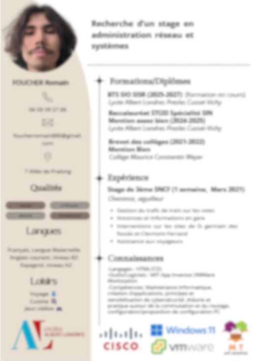

Foucher Romain
Je suis en SISR
A propos de moi

MON CV
Je m'appelle Romain Foucher, j'ai 18 ans et j'effectue un BTS SIO en spécialité SISR.
Ce BTS représente pour moi une porte vers la vie active et une bonne suite d'étude.
- Pourquoi ce BTS et cette spécialité ? J'ai fais un suivi d'étude orienté sur l'innovation technologique et ai souhaité continué sur la voie informatique concentré sur une partie gestion réseau pour en apprendre plus sur ce qui entoure et forme le domaine informatique.
- Quel type de métier je vise plus tard ? Plus tard je me vois gérer des infrastructures réseaux et faire de la maintenance informatique, donc un technicien Systèmes et Réseaux
- Quel type de parcours scolaire est le plus adapté pour enchaîner sur le BTS SIO ? Personnellement je considère le BTS accessible au personne ayant eu un suivi scolaire aux alentours de l'informatique,de mon côté j'ai effectué une seconde générale et par la suite ai fait un baccalauréat technologique en STI2D en SIN.
Mon Établissement
Le Lycée Albert Londres de Cusset, où je réalise ma formation BTS SIO.

Entrée principale — Lycée Albert Londres

Le campus du lycée
Le Lycée Albert Londres
Situé à Cusset (03300), le Lycée Albert Londres est un établissement polyvalent proposant des formations générales, technologiques et professionnelles. Il accueille plusieurs centaines d'élèves et bénéficie d'équipements modernes, notamment dans le domaine de l'informatique et des réseaux.
Dans le cadre du BTS SIO, le lycée dispose de salles informatiques spécialisées équipées de postes de travail récents, de switchs Cisco, de serveurs et d'une infrastructure réseau complète permettant la mise en pratique des cours théoriques.
- Établissement polyvalent — formations générales & technologiques
- Infrastructure réseau Cisco dédiée au BTS SIO
- Salles serveurs et baies de brassage accessibles
- Partenariat avec Cisco Networking Academy
Informations
- Lycée Albert Londres
- Cusset, 03300 — Auvergne-Rhône-Alpes
- Formation : BTS SIO — option SISR
- Durée : 2 ans (2025 — 2027)
- Partenaire Cisco Networking Academy
Les salles spécialisées BTS SIO
Des environnements professionnels pour une formation en conditions réelles.


Équipements typiques du BTS SIO
Commutation VLAN, VTP, configuration IOS
Routage inter-VLAN, protocoles réseau
Windows 10/11, VMware, outils réseau
Infrastructure réelle, câblage RJ45
Réseau VoIP, configuration VLAN voix
Simulation réseau et machines virtuelles
BTS SIO
Le Brevet de Technicien Supérieur aux Services Informatiques aux Organisations (BTS SIO), s'adresse à ceux qui souhaitent se former en deux ans aux métiers d'administrateur réseau ou de développeur. Pour par la suite intégré directement le marché du travail ou continuer des études.
Il offre donc deux options différentes :
Option SISR
Ma spécialitéFormation aux réseaux et infrastructures informatiques.
Débouchés :
- Administrateur systèmes et réseaux
- Informaticien support et déploiement
- Pilote d'exploitation
- Support systèmes et réseaux
- Technicien d'infrastructure
- Technicien de production
- Technicien micro et réseaux
Option SLAM
Développement logicielFormation au développement logiciel et applicatif.
Débouchés :
- Développeur d'applications informatiques
- Développeur informatique
- Analyste d'applications ou d'études
- Analyste programmeur
- Programmeur analyste
- Programmeur d'applications
- Responsable des services applicatifs
- Technicien d'études informatiques
Diplômes et Documents Importants
Ci-dessous vous trouverez une liste de mes diplômes et Documents Importants post et pre BTS
Attestation Cisco
Introduction à la cybersécurité — Cisco Networking Academy. Obtenue le 30 novembre 2025 au Lycée Albert Londres de Cusset.
En savoir plusDiplôme du brevet des collèges
Diplôme obtenu en 2022 au Collège Maurice Constantin Weyer avec la mention Bien.
En savoir plusDiplôme du Baccalauréat
Bac Technologique STI2D SIN, mention Assez Bien, 2025, Lycée Albert Londres.
En savoir plusCertification Pix
Niveau Indépendant 1 — 322/895 points. Obtenue le 27 novembre 2024 au Lycée Albert Londres de Cusset.
En savoir plusLes Outils avec lesquels j'ai travaillé
VISUAL STUDIO
LINUX
WINDOWS

GITHUB
VMWARE

PACKET TRACER
Mes Projets
Ci-dessous vous trouverez les projets effectués au cours de ma première années et par la suite celle de tout mon cursus
- Tout
- 1ère Année
- 2ème Année
RECHERCHES METIERS / REDACTION CV / MAIL MOTIVE / ENTRETIEN
APPEL D'OFFRES PC FIXES & PORTABLES
MISE EN PLACE D'UN RESEAU POSTE A POSTE
PREPARATION MISE EN RESEAU D'UNE SALLE
CONCEPTION ET REALISATION D'UN SITE WEB
CREATION D'UN PORTFOLIO
CREATION D'UNE CLE YUMI
REFONTE RESEAU BROCKER'INFO COMMUTATION-ROUTAGE
Mes Stages
Mes Contacts
Sous n'importe quelles demandes voici comment me contacter
Localisation
03300 Cusset
Numéro de téléphone
06 59 39 27 86
foucherromain886@gmail.com